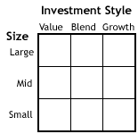

As you probably know, mutual funds have become extremely popular over the last 20 years. What was once just another obscure financial instrument is now a part of our daily lives. More than 80 million people, or one half of the households in America, invest in mutual funds. That means that, in the United States alone, trillions of dollars are invested in mutual funds. (For more reading, see A Brief History Of The Mutual Fund.)
In fact, to many people, investing means buying mutual funds. After all, it's common knowledge that investing in mutual funds is (or at least should be) better than simply letting your cash waste away in a savings account, but, for most people, that's where the understanding of funds ends. It doesn't help that mutual fund salespeople speak a strange language that is interspersed with jargon that many investors don't understand.
Originally, mutual funds were heralded as a way for the little guy to get a piece of the market. Instead of spending all your free time buried in the financial pages of the Wall Street Journal, all you had to do was buy a mutual fund and you'd be set on your way to financial freedom. As you might have guessed, it's not that easy. Mutual funds are an excellent idea in theory, but, in reality, they haven't always delivered. Not all mutual funds are created equal, and investing in mutuals isn't as easy as throwing your money at the first salesperson who solicits your business. (Learn about the pros and cons in Mutual Funds Are Awesome - Except When They're Not.)
In this tutorial, we'll explain the basics of mutual funds and hopefully clear up some of the myths around them. You can then decide whether or not they are right for you.
The Definition
A mutual fund is nothing more than a collection of stocks and/or bonds. You can think of a mutual fund as a company that brings together a group of people and invests their money in stocks, bonds, and other securities. Each investor owns shares, which represent a portion of the holdings of the fund.
You can make money from a mutual fund in three ways:
1) Income is earned from dividends on stocks and interest on bonds. A fund pays out nearly all of the income it receives over the year to fund owners in the form of a distribution.
2) If the fund sells securities that have increased in price, the fund has a capital gain. Most funds also pass on these gains to investors in a distribution.
3) If fund holdings increase in price but are not sold by the fund manager, the fund's shares increase in price. You can then sell your mutual fund shares for a profit.
Funds will also usually give you a choice either to receive a check for distributions or to reinvest the earnings and get more shares.
Advantages of Mutual Funds
• Professional Management - The primary advantage of funds is the professional management of your money. Investors purchase funds because they do not have the time or the expertise to manage their own portfolios. A mutual fund is a relatively inexpensive way for a small investor to get a full-time manager to make and monitor investments. (For more reading see Active Management: Is It Working For You?)
• Diversification - By owning shares in a mutual fund instead of owning individual stocks or bonds, your risk is spread out. The idea behind diversification is to invest in a large number of assets so that a loss in any particular investment is minimized by gains in others. In other words, the more stocks and bonds you own, the less any one of them can hurt you (think about Enron). Large mutual funds typically own hundreds of different stocks in many different industries. It wouldn't be possible for an investor to build this kind of a portfolio with a small amount of money.
• Economies of Scale - Because a mutual fund buys and sells large amounts of securities at a time, its transaction costs are lower than what an individual would pay for securities transactions.
• Liquidity - Just like an individual stock, a mutual fund allows you to request that your shares be converted into cash at any time.
• Simplicity - Buying a mutual fund is easy! Pretty well any bank has its own line of mutual funds, and the minimum investment is small. Most companies also have automatic purchase plans whereby as little as $100 can be invested on a monthly basis.
Disadvantages of Mutual Funds
• Professional Management - Many investors debate whether or not the professionals are any better than you or I at picking stocks. Management is by no means infallible, and, even if the fund loses money, the manager still gets paid.
• Costs - Creating, distributing, and running a mutual fund is an expensive proposition. Everything from the manager's salary to the investors' statements cost money. Those expenses are passed on to the investors. Since fees vary widely from fund to fund, failing to pay attention to the fees can have negative long-term consequences. Remember, every dollar spend on fees is a dollar that has no opportunity to grow over time. (Learn how to escape these costs in Stop Paying High Mutual Fund Fees.)
• Dilution - It's possible to have too much diversification. Because funds have small holdings in so many different companies, high returns from a few investments often don't make much difference on the overall return. Dilution is also the result of a successful fund getting too big. When money pours into funds that have had strong success, the manager often has trouble finding a good investment for all the new money.
• Taxes - When a fund manager sells a security, a capital-gains tax is triggered. Investors who are concerned about the impact of taxes need to keep those concerns in mind when investing in mutual funds. Taxes can be mitigated by investing in tax-sensitive funds or by holding non-tax sensitive mutual fund in a tax-deferred account, such as a 401(k) or IRA. (Learn about one type of tax-deferred fund in Money Market Mutual Funds: A Better Savings Account.)
No matter what type of investor you are, there is bound to be a mutual fund that fits your style. According to the last count there are more than 10,000 mutual funds in North America! That means there are more mutual funds than stocks. (For more reading see Which Mutual Fund Style Index Is For You?)
It's important to understand that each mutual fund has different risks and rewards. In general, the higher the potential return, the higher the risk of loss. Although some funds are less risky than others, all funds have some level of risk - it's never possible to diversify away all risk. This is a fact for all investments.
Each fund has a predetermined investment objective that tailors the fund's assets, regions of investments and investment strategies. At the fundamental level, there are three varieties of mutual funds:
1) Equity funds (stocks)
2) Fixed-income funds (bonds)
3) Money market funds
All mutual funds are variations of these three asset classes. For example, while equity funds that invest in fast-growing companies are known as growth funds, equity funds that invest only in companies of the same sector or region are known as specialty funds.
Let's go over the many different flavors of funds. We'll start with the safest and then work through to the more risky.
Money Market Funds
The money market consists of short-term debt instruments, mostly Treasury bills. This is a safe place to park your money. You won't get great returns, but you won't have to worry about losing your principal. A typical return is twice the amount you would earn in a regular checking/savings account and a little less than the average certificate of deposit (CD).
Bond/Income Funds
Income funds are named appropriately: their purpose is to provide current income on a steady basis. When referring to mutual funds, the terms "fixed-income," "bond," and "income" are synonymous. These terms denote funds that invest primarily in government and corporate debt. While fund holdings may appreciate in value, the primary objective of these funds is to provide a steady cashflow to investors. As such, the audience for these funds consists of conservative investors and retirees. (Learn more inIncome Funds 101.)
Bond funds are likely to pay higher returns than certificates of deposit and money market investments, but bond funds aren't without risk. Because there are many different types of bonds, bond funds can vary dramatically depending on where they invest. For example, a fund specializing in high-yield junk bonds is much more risky than a fund that invests in government securities. Furthermore, nearly all bond funds are subject to interest rate risk, which means that if rates go up the value of the fund goes down.
Balanced Funds
The objective of these funds is to provide a balanced mixture of safety, income and capital appreciation. The strategy of balanced funds is to invest in a combination of fixed income and equities. A typical balanced fund might have a weighting of 60% equity and 40% fixed income. The weighting might also be restricted to a specified maximum or minimum for each asset class.
A similar type of fund is known as an asset allocation fund. Objectives are similar to those of a balanced fund, but these kinds of funds typically do not have to hold a specified percentage of any asset class. The portfolio manager is therefore given freedom to switch the ratio of asset classes as the economy moves through the business cycle.
Equity Funds
Funds that invest in stocks represent the largest category of mutual funds. Generally, the investment objective of this class of funds is long-term capital growth with some income. There are, however, many different types of equity funds because there are many different types of equities. A great way to understand the universe of equity funds is to use a style box, an example of which is below.
The idea is to classify funds based on both the size of the companies invested in and the investment style of the manager. The term value refers to a style of investing that looks for high quality companies that are out of favor with the market. These companies are characterized by low P/E and price-to-book ratios and high dividend yields. The opposite of value is growth, which refers to companies that have had (and are expected to continue to have) strong growth in earnings, sales and cash flow. A compromise between value and growth is blend, which simply refers to companies that are neither value nor growth stocks and are classified as being somewhere in the middle.
For example, a mutual fund that invests in large-cap companies that are in strong financial shape but have recently seen their share prices fall would be placed in the upper left quadrant of the style box (large and value). The opposite of this would be a fund that invests in startup technology companies with excellent growth prospects. Such a mutual fund would reside in the bottom right quadrant (small and growth). (For further reading, check out Understanding The Mutual Fund Style Box.)
Global/International Funds
An international fund (or foreign fund) invests only outside your home country. Global funds invest anywhere around the world, including your home country.
It's tough to classify these funds as either riskier or safer than domestic investments. They do tend to be more volatile and have unique country and/or political risks. But, on the flip side, they can, as part of a well-balanced portfolio, actually reduce risk by increasing diversification. Although the world's economies are becoming more inter-related, it is likely that another economy somewhere is outperforming the economy of your home country.
Specialty Funds
This classification of mutual funds is more of an all-encompassing category that consists of funds that have proved to be popular but don't necessarily belong to the categories we've described so far. This type of mutual fund forgoes broad diversification to concentrate on a certain segment of the economy.
Sector funds are targeted at specific sectors of the economy such as financial, technology, health, etc. Sector funds are extremely volatile. There is a greater possibility of big gains, but you have to accept that your sector may tank.
Regional funds make it easier to focus on a specific area of the world. This may mean focusing on a region (say Latin America) or an individual country (for example, only Brazil). An advantage of these funds is that they make it easier to buy stock in foreign countries, which is otherwise difficult and expensive. Just like for sector funds, you have to accept the high risk of loss, which occurs if the region goes into a bad recession.
Socially-responsible funds (or ethical funds) invest only in companies that meet the criteria of certain guidelines or beliefs. Most socially responsible funds don't invest in industries such as tobacco, alcoholic beverages, weapons or nuclear power. The idea is to get a competitive performance while still maintaining a healthy conscience.
Index Funds
The last but certainly not the least important are index funds. This type of mutual fund replicates the performance of a broad market index such as the S&P 500 or Dow Jones Industrial Average (DJIA). An investor in an index fund figures that most managers can't beat the market. An index fund merely replicates the market return and benefits investors in the form of low fees. (For more on index funds, check out our Index Investing Tutorial.)
Costs are the biggest problem with mutual funds. These costs eat into your return, and they are the main reason why the majority of funds end up with sub-par performance.
What's even more disturbing is the way the fund industry hides costs through a layer of financial complexity and jargon. Some critics of the industry say that mutual fund companies get away with the fees they charge only because the average investor does not understand what he/she is paying for.
Fees can be broken down into two categories:
1. Ongoing yearly fees to keep you invested in the fund.
2. Transaction fees paid when you buy or sell shares in a fund (loads).
The Expense Ratio
The ongoing expenses of a mutual fund is represented by the expense ratio. This is sometimes also referred to as the management expense ratio (MER). The expense ratio is composed of the following:
• The cost of hiring the fund manager(s) - Also known as the management fee, this cost is between 0.5% and 1% of assets on average. While it sounds small, this fee ensures that mutual fund managers remain in the country's top echelon of earners. Think about it for a second: 1% of 250 million (a small mutual fund) is $2.5 million - fund managers are definitely not going hungry! It's true that paying managers is a necessary fee, but don't think that a high fee assures superior performance. (Find out more in Will A New Fund Manager Cost You?)
• Administrative costs - These include necessities such as postage, record keeping, customer service, cappuccino machines, etc. Some funds are excellent at minimizing these costs while others (the ones with the cappuccino machines in the office) are not.
• The last part of the ongoing fee (in the United States anyway) is known as the 12B-1 fee. This expense goes toward paying brokerage commissions and toward advertising and promoting the fund. That's right, if you invest in a fund with a 12B-1 fee, you are paying for the fund to run commercials and sell itself! (For related reading, see Break Free Of Fees With Mutual Fund Breakpoints.)
On the whole, expense ratios range from as low as 0.2% (usually for index funds) to as high as 2%. The average equity mutual fund charges around 1.3%-1.5%. You'll generally pay more for specialty or international funds, which require more expertise from managers.
Are high fees worth it? You get what you pay for, right?
Wrong.
Just about every study ever done has shown no correlation between high expense ratios and high returns. This is a fact. If you want more evidence, consider this quote from the Securities and Exchange Commission's website:
"Higher expense funds do not, on average, perform better than lower expense funds."
Loads, A.K.A. "Fee for Salesperson"
Loads are just fees that a fund uses to compensate brokers or other salespeople for selling you the mutual fund. All you really need to know about loads is this: don't buy funds with loads.
In case you are still curious, here is how certain loads work:
• Front-end loads - These are the most simple type of load: you pay the fee when you purchase the fund. If you invest $1,000 in a mutual fund with a 5% front-end load, $50 will pay for the sales charge, and $950 will be invested in the fund.
• Back-end loads (also known as deferred sales charges) - These are a bit more complicated. In such a fund you pay the a back-end load if you sell a fund within a certain time frame. A typical example is a 6% back-end load that decreases to 0% in the seventh year. The load is 6% if you sell in the first year, 5% in the second year, etc. If you don't sell the mutual fund until the seventh year, you don't have to pay the back-end load at all.
A no-load fund sells its shares without a commission or sales charge. Some in the mutual fund industry will tell you that the load is the fee that pays for the service of a broker choosing the correct fund for you. According to this argument, your returns will be higher because the professional advice put you into a better fund. There is little to no evidence that shows a correlation between load funds and superior performance. In fact, when you take the fees into account, the average load fund performs worse than a no-load fund. (For related reading, see The Lowdown On No-Load Mutual Funds.)
Buying
You can buy some mutual funds (no-load) by contacting fund companies directly. Other funds are sold through brokers, banks, financial planners, or insurance agents. If you buy through a third party, you may pay a sales charge (load).
That said, funds can be purchased through no-transaction fee programs that offer funds from many companies. Sometimes referred to as "fund supermarkets," these programs let you buy funds from many different companies. They also provide consolidated recording that includes all purchases made through the supermarket, even if they are from different fund families. Popular examples are Schwab's OneSource, Vanguard's FundAccess, and Fidelity's FundsNetwork. Many large brokerages have similar offerings.
What to Know Before You Shop
Net asset value (
When you buy shares, you pay the current
Finding Funds
Nearly every fund company in the country also has its own website. Simply type the name of the fund or fund company that you wish to learn more about into a search engine and hit "search." If you don't have a specific fund company already in mind, you can run a search for terms like "no-load small cap fund" or large-cap value fund."
For a more organized search, there are a variety of other resources available online. Two notable ones include:
The Mutual Fund Education Alliance is the not-for-profit trade association of the no-load mutual fund industry. They have a tool for searching for no-load funds.
Morningstar is an investment research firm that is particularly well known for its fund information.
Identifying Goals and Risk Tolerance
Before acquiring shares in any fund, you need to think about why you are investing. What is your goal? Are long-term capital gains desired, or is a current income preferred? Will the money be used to pay for college expenses, or to supplement a retirement that is decades away? Identifying a goal is important because it will help you hone in on the right fund for the task.
For really short-term goals, money market funds may be the right choice, For goals that are few years in the future, bond funds may be appropriate. For long-term goals, stocks funds may be the way to go.
Of course, you must also consider the issue of risk tolerance. Can you afford and accept dramatic swings in portfolio value? If so, you may prefer stock funds over bond funds. Or is a more conservative investment warranted? In that case, bond funds may be the way to go. (To learn more, read Analyzing Mutual Fund Risk.)
The next question to consider include "are you more concerned about trying to outperform your fund's benchmark index or are you more concerned about the cost of your investments?" If the answer is "cost," index funds are likely the right choice for you.
Additional questions, to consider include how much money you have to invest, whether you should invest in a lump sum or a little bit over time and whether taxes are a concern for you. (Learn how to invest with a small amount of cash in How To Invest On A Shoestring Budget.)
Mutual fund data is easy to find and easy to read. The most common method of accessing the information used to be via a mutual fund table in the newspaper, but now this information is more commonly found online. (For more on finding the right information, check out Data Mining For Investors.)
Online
Websites provide significantly more data about a given mutual fund than a fund table does. Yahoo Finance, MSN Money and all of the major mutual fund companies provide robust websites filled with fund information.
The following basic details are usually provided: fund name, net asset value, trade time (provides date for last price), price change, previous close price, year-to-date return, net assets, and yield. With a just a few clicks of the mouse you can also view historical prices, headlines news, fund holdings, Morningstar ratings and more. (Learn how to use this data in Analyzing Mutual Funds For Maximum Return.)
Newspaper Fund Table
By providing key data points, mutual fund tables give an overview of a mutual fund's performance for the past 12 months in relation to its current price. They also provide insight into how the fund's price per share has changed over the course of the most recent week.
However, with the high prices of newsprint, declining readership, and increasing adoption of technology, many newspapers are cutting back on the space allocated to mutual fund tables. This is particularly true where smaller and less popular funds are concerned. Going online or calling the fund company directly may be the only way to get information about these products.
What Do You Need?The wealth of information available can be daunting. What do you really need to know? Where can you go to find it? How much detail is too much? The answers to these questions largely depend on how you plan to invest. If you are looking to day trade, for example, information about daily pricing trends may be critical to your efforts. If you plan to buy and hold for decades, long-term performance information, fund expense ratios, and the management team's history are probably enough. Fund fact sheets and a copy of the fund's prospectus are available on most fund company websites. These documents generally provide all the information long-term investors require to make decisions. (To learn more, check out January: Time To Read Your Mutual Fund's Annual Report.)
Perhaps you've noticed all those mutual fund ads that quote their amazingly high one-year rates of return. Your first thought is "wow, that mutual fund did great!" Well, yes it did great last year, but then you look at the three-year performance, which is lower, and the five year, which is yet even lower. What's the underlying story here? Let's look at a real example from a large mutual fund's performance:
| 1 year | 3 year | 5 year |
| 53% | 20% | 11% |
L
ast year, the fund had excellent performance at 53%. But, in the past three years, the average annual return was 20%. What did it do in years 1 and 2 to bring the average return down to 20%? Some simple math shows us that the fund made an average return of 3.5% over those first two years: 20% = (53% + 3.5% + 3.5%)/3. Because that is only an average, it is very possible that the fund lost money in one of those years.
It gets worse when we look at the five-year performance. We know that in the last year the fund returned 53% and in years 2 and 3 we are guessing it returned around 3.5%. So what happened in years 4 and 5 to bring the average return down to 11%? Again, by doing some simple calculations we find that the fund must have lost money, an average of -2.5% each year of those two years: 11% = (53% + 3.5% + 3.5% - 2.5% - 2.5%)/5. Now the fund's performance doesn't look so good!
It should be mentioned that, for the sake of simplicity, this example, besides making some big assumptions, doesn't include calculating compound interest. Still, the point wasn't to be technically accurate but to demonstrate the importance of taking a closer look at performance numbers. A fund that loses money for a few years can bump the average up significantly with one or two strong years.
It's All Relative
Of course, knowing how a fund performed is only one third of the battle. Performance is a relative issue, literally. If the fund we looked at above is judged against its appropriate benchmark index, a whole new layer of information is added to the evaluation. If the index returned 75% for the 1 year time period, that 53% from the fund doesn't look quite so good. On the other hand, if the index delivered results of 25%, 5%, and -5% for the respective one, three, and five-year periods, then the fund's results look rather fine indeed.
To add another layer of information to the evaluation, one can consider a fund's performance against its peer group as well as against its index. If other funds that invest with a similar mandate had similar performance, this data point tells us that the fund is in line with its peers. If the fund bested its peers and its benchmark, its results would be quite impressive indeed.
Looking at any one piece of information in isolation only tells a small portion of the story. Consider the comparison of a fund against its peers. If the fund sits in the top slot over each of the comparison periods, it is likely to be a solid performer. If it sits at the bottom, it may be even worse than perceived, as peer group comparisons only capture the results from existing funds. Many fund companies are in the habit of closing their worst performers. When the "losers" are purged from their respective categories, their statistical records are no longer included in the category performance data. This makes the category averages creep higher than they would have if the losers were still in the mix. This is better known as survivorship bias. (Learn more about survivorship bias in The Truth Behind Mutual Fund Returns.)
To develop the best possible picture of fund's performance results, consider as many data points as you can. Long-term investors should focus on long-term results, keeping in mind that even the best performing funds have bad years from time to time. (Dig into the numbers in Mutual Fund Ratings: Are They Deceiving?)
Let's recap what we've learned in this tutorial:
{kind=link}